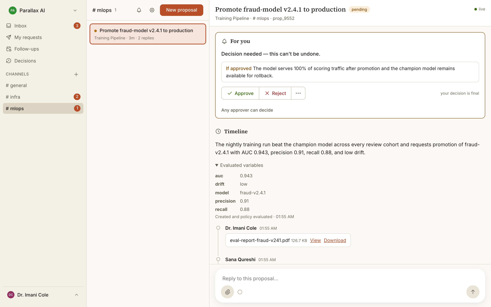

SYS-01
Gatekeeper
Approval infrastructure for actions that are hard to undo.
We are an independent software studio. Most of what we make sits in front of decisions that are expensive to get wrong. Deployments, access grants, payments, and actions an agent takes on its own.
More software now acts without a person watching it. That works until something goes wrong and nobody can say who approved it, what it did, or how to undo it. That gap is what we build for.
A service or an agent asks for permission. The request goes to whoever is responsible for it. Nothing runs until they answer, and the answer is kept as a signed record.
gatekeeper.now
We ask them of our own products, and of the work we do for other people.
Every action has a named owner, whether that owner is a person or a service.
We design the refusal and the way back before we design the path that works.
Anything that matters leaves a record you can read months later and check.
We build and run our own products. We also take on client work, in any line of work that touches software.
Get in touch